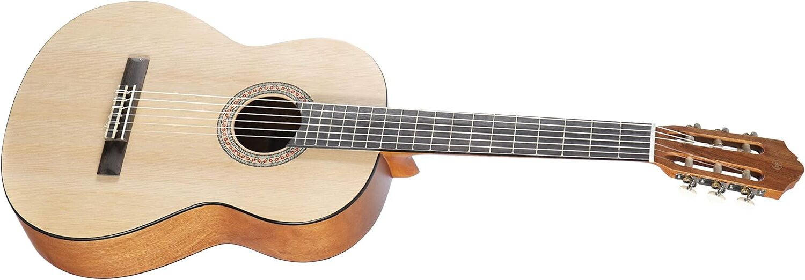
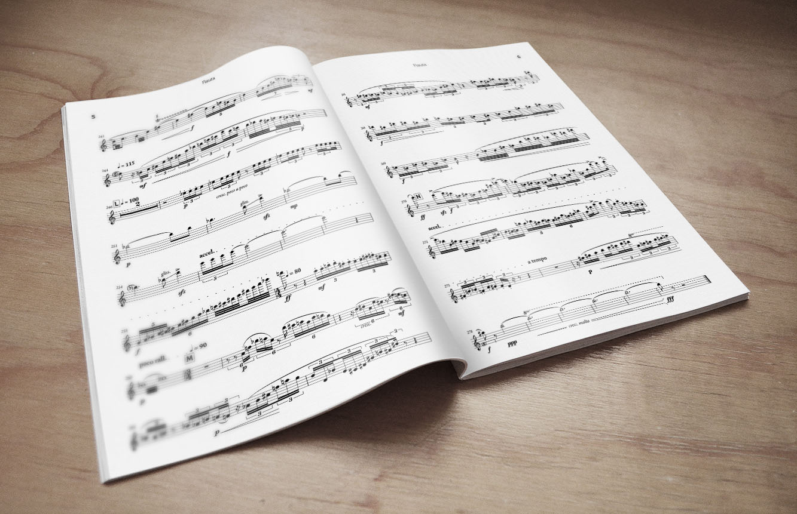
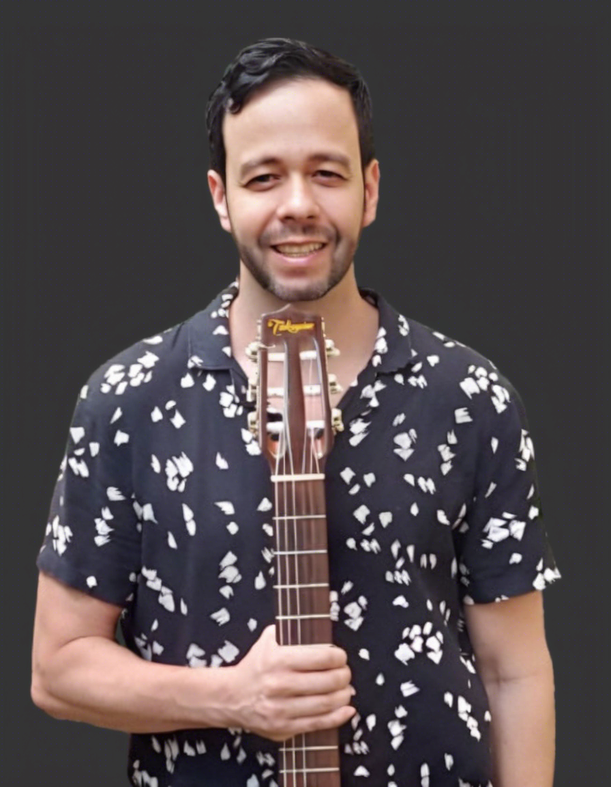

Sobre as Aulas
Transforme sua paixão em música!
Descubra o prazer de tocar violão com aulas personalizadas que se adaptam ao seu ritmo e estilo
musical.
Em poucos meses, você estará dominando suas músicas favoritas e encantando todos
ao seu
redor com sua habilidade única.
Minhas aulas são cuidadosamente planejadas para garantir que você não apenas aprenda, mas também se
divirta ao longo do caminho.
Do básico ao avançado, vamos construir juntos uma base sólida
de
conhecimento musical que o capacitará a se destacar como um músico completo.
Não espere mais para realizar seus sonhos musicais. Comece hoje mesmo sua jornada de aprendizado de violão e descubra o prazer de fazer música no conforto da sua própria casa.
Clique no botão abaixo para dar o primeiro passo!
Marcar Aula Experimental
Violão Yamaha C40MII - O melhor custo-benefício para iniciante
 👉 Ver preço na AmazonMétodo - O que o aluno iniciante vai aprender

| Teoria Musical |
|
|
| Técnica Instrumental |
|
|
| Harmonia |
|
|
| Estudo de Repertório |
|
|
Violão Yamaha C40MII - O melhor custo-benefício para iniciante
Marcar Aula Experimental
Método - O que o aluno intermediário vai aprender
| Teoria Musical |
|
|
| Técnica Instrumental |
|
|
| Harmonia e Percepção Musical |
|
|
| Estudo de Repertório |
|
|
Sobre o Professor

Olá, sou Luis Abranches, professor de violão e guitarra há mais de duas décadas. Minha jornada musical começou nas principais escolas de música de São Paulo, como a EMESP (Escola de Música do Estado de São Paulo), Escola Municipal de Música e Faculdade Cantareira.
Ao longo dos anos, busquei aprimorar minha técnica e conhecimento participando de cursos livres na EMESP, como o renomado "Pixinguinha na Pauta" e "Prática de Choro". Durante esse tempo, tive a oportunidade de me apresentar como violonista e cantor em diversos locais, desde teatros até bares, restaurantes e eventos.
Minha paixão pela música e pela arte de ensinar me impulsiona a compartilhar meu conhecimento e experiência com meus alunos. Se você está buscando aprender violão ou guitarra, desde os primeiros acordes até técnicas mais avançadas, estou aqui para ajudar. Vamos embarcar juntos nessa jornada musical e alcançar seus objetivos!
Quais formatos de aula você pode fazer

| Aulas Mensais | Aulas Quinzenais | Aulas Avulsas | Aulas Online | Aulas em Grupo Online |
|---|---|---|---|---|
| Aulas semanais, uma aula por semana,com 1h de duração | Aulas quinzenais, 1 aula a cada 15 dias | Aulas avulsas, o valor do investimento é cobrado por aula | Aulas online, por vídeo chamada, nesse plano aplica-se as três condições dos planos anteriores, Semanal, Quinzenal ou Avulso | Aulas online, por vídeo chamada |
| Em dupla, dois alunos por aula, com o mesmo valor de investimento | Em dupla, dois alunos por aula, com o mesmo valor de investimento | Em dupla, dois alunos por aula, com o mesmo valor de investimento | Em dupla, dois alunos por aula, com o mesmo valor de investimento | Em grupo com limite de 8 pessoas, investimento mais baixo em relação aos outros formatos de aula. |